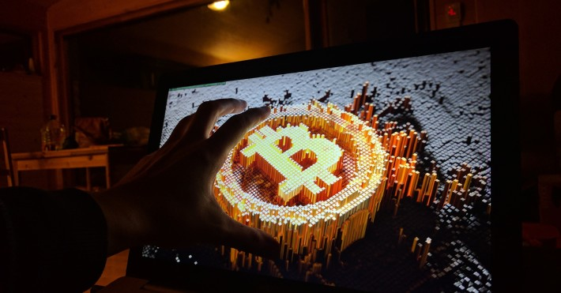
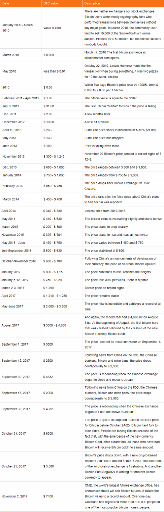

Bitkoin istorija, rudnik, promene cena, budućnost

Bitkoinova valuta i kriptoanalitički su brzo rastući oblik elektronskog novca. Najpopularnija kriptovaliuta je Bitkoin, koji je prvi kreirao anonimna osoba ili grupa ljudi, ali je javno objavio da je tvorac Bitkoina izmišljen od strane Satoshi Nakamoto. Bitkainska valuta je blokirana tehnologija je zasnovana na stvaranju virtualnog novca koristeći siguran i anonimni kanal. Da bi prenosili Bitkoin ili njegove dijelove (Satoshis) sa jednog računa na drugi, neophodni su superračunari, koji takodje obavljaju ovaj posao u rešavanju složenih algoritama koji garantuju sigurnost transakcije i anonimnost. U suštini, ne bi bilo Bitkoin valute, ukoliko nije bilo superračunara koji odobravaju transakcije, a Bitkoin ne bi bio toliko popularan ako se broj transakcija ne proširi.
Računari za fiksiranje transakcija, takođe nazvanih BitkoinMinefields, ulažu milijarde dolara, vlasnici rudnika kupuju superkompjutere koji, u skladu s pravilima, obavljaju sve složene zadatke za odobravanje Bitkoin transakcija. Za odobravanje transakcija, vlasnici rudnika stvaraju Bitkoine i primaju ih na svoje račune. Kopanje bitkoina je bilo relativno jednostavno, jer nije bilo tako široko korišteno, bilo je moguće koristiti svoj računar kod kuće, držati ga i napuštati bitkoine. Kako kompleksnost algoritama raste, postoje zahtevi za kompjuterskom opremom koja mora da rešava sve kompleksnije zadatke. Kaže se da započinjanje poslovanja kompanije Bitkoin i stvaranje profitabilnih zahteva najmanje 5 miliona. Dolara Procenjuje se da do danas, da biste kreirali jedan bitkoin, trebate potrošiti više od $ 1,000 (kada BTC trenutno košta 4,000 dolara), odličan posao za vlasnike rudnika. Bitkoin pravila i algoritmi obezbeđuju maksimalno kopanje Bitkoina, što je 21 miliona. Bitkoini, a sada ih je više od 16 miliona iskopano. Bitkoins. Prema tome, procenjuje se da preostalih 5 miliona. Bitkoini svakih 2140, jer algoritmi postaju složeniji, a možda i duži, u zavisnosti od vrednosti Bitkoina.
Bitkoin mines
Najveći bitkoinovi rudnici nalaze se u Kini zbog veoma jeftine električne energije. Da bi osigurali Bitkoin transakcije, neophodni su ne samo super-moćni računari, već i jeftina električna energija, jer koriste veoma velike količine - jeftina električna energija mora biti profitabilna. Dakle, najveći bitkoin rudari (Bitkoin makeri) nalaze se u Kini, a druga zemlja u kojoj dominira bitkoin rudnici je Island, koji ima mnogo planina, jeftinu električnu energiju i jednostavan, sa dobrom ventilacijom zbog povoljne klime. U Češkoj Republici postoji i jedno od najvećih rudnika na kojima su se entuzijasti iskopavanja bitkoina naselili na običnim računarima u 2012. godini, a kada su vidjeli da su svi odrastali za veliki novac, iznajmili skladišta negde na periferiji Češke Republike, postavio je veliki broj računara, a zatim angažovao velike sigurnosne snage kako bi izbegao polet Velike mine se takođe nalaze u SAD-u (Kalifornija), Gruziji, Indiji, Japanu. U Litvaniji imamo puno kriptovalnih proizvođača kaseta, ali Bitkoin nije vredan kopanja, tako da su postavljene druge, profitabilnije kriptovagije
Bitkoinova priča
Bitkainova priča je veoma zanimljiva. Krajem 2008. godine dokumentu je poslat elektronskoj pošti kriptografske zajednice. Bitkoin: P2P elektronski sistem gotovog novca (Bitkoin: sistem elektronskog novčanog poreza). Dakle, 2009. godine sam Satoshi Nakamoto iskopao je prvi Genesis blok, koji je dobio 50 bitkoin-a. Zatim, specijalista kriptografije Hal. Finnei je preuzeo trenutni program Bitkoina i dobio 10 bitkoins od Satoshi, prve transakcije u istoriji bitkoina. Ovo je takođe započelo sa svima upotrebljivostima, u početku se pojavilo među kriptografskim stručnjacima koji su, kako je trebalo, stvarno stvorili ceo dokument, logiku i sistem.
U 2010. godini jedno od prvih plaćanja za robu dogodilo se kada je osoba iz picerije kupila dve pice za 10 hiljada. Bitkoini (njihova vrijednost se povećala na 400 miliona dolara u toku 7 godina), koja je nazvana kao najskuplja pica u svijetu, nadamo se da su bili vrlo ukusni.
Istorija vrijednosti vrijednosti bitkoina (kontinuirano ažurirana)

Kao što vidimo Bitkoinova cijena je veoma nestabilna, varira i može pasti za 40% dnevno, ali čak može porasti. Međutim, što je veća investicija u bitkoinskim rudnicima, veća će biti ta valuta, jer će investitori, uticajni preduzetnici i dalje nastojati da razvijaju nezavisnu valutu. Bitkoin se trenutno suočava sa legalizacijom i postaje nacionalna valuta, ali to nije moguće jer je sam Bitkoin, njegovo delovanje i račun anoniman, a kako bi se integrisao u ekonomiju određene zemlje, postati druga valuta zahteva saznanje koliko je određena osoba Bitkoins račun.
BitkoinThanks za Bitkoin, možete dobiti još "crnog" novca nego što jeste, i ne vole mnoge ekonomije i vlade na svijetu koje samo žele oporezovati sve, pratiti i videti svaki cent od ljudi. Širenjem Bitkoina tako da bi počelo da koristi kritičnu masu ljudi koji dobijaju nagrade od bikarbonata, biće naplaćeni za usluge, stranke bi prikupile manje poreza jer ne bi mogle pratiti koliko ljudi zarađuju u bitkoinima. Ovo je najveći konflikt između Bitkoina i vlada koji se protive Bitkovinoj legalizaciji. Džejmi Dimon, JP Morgan, rekao je u nekoliko intervjua da su bitkeini ilegalni i da su "prevara", i ova rečenica zvučala je veoma glasno među entuzijastima Bitkoina. U istom intervjuu, on je pokrenuo vrlo interesantnu i prilično opasnu ideju, ako Bitkoin tako napreduje i dostigne kritičnu masu, nacionalnim vladama se to neće dopasti i samo bi trebale kazniti Bitkoine za krivično gonjenje i zasad u zatvor. Samo ovo bi moglo uništiti prisustvo ove valute. Iako ne misle sve zemlje.
Bitkoin cene, buduća vrednost
Naravno, tehnologija blokiranja i njegova upotreba u budućim finansijskim instrumentima je neosporna, ona će se koristiti jer je veoma sigurna i pouzdana. Zbog same budućnosti Bitkoina, ima puno pitanja, ovaj kriptoat je još u ranoj fazi i imaće mnoge druge prepreke za anonimna plaćanja, finansiranje terorizma, utaja poreza itd. Ali, recimo, to je globalna valuta i ona će uspeti da izađe sa puta i postane nenacionalna valuta, valuta. Naći će se problem brzine transakcije i cene. Već je prebacivanje bitkoina sa jedne račune na drugi veoma skupo i traje prilično dugo; u ovom trenutku bitkoin za mikrokosmuse, na primer, kupiti sladoled, čokoladu ili platiti kafu, više nije pristupačan, pošto transfer košta gotovo isto koliko i proizvod. Postoje alternativne valute kao Litecoin, koje su znatno brže i jeftinije. Kako se javno kaže, Bitkoin će biti zlato za uspeh, a Liteco će biti srebro. Zlato ćete smatrati investicijom kao vrednim predmetom, a srebro će biti za mala naselja, za svakodnevnu upotrebu.
U slučaju uspeha bitkoina, ova valuta uopšte neće imati nikakav izbor u dužem periodu od 3 godine, kao bujični porast ili pad ili nestati. Sledeći, bitkoin će učiniti jeftinijim i zahtevati puno resursa, a jedan bitkoin koštaće mnogo. Ulaganje u proizvodnju virtuelne valute je ogromno, i to podstiče čitavo tržište i vjeru. Najveći problem sa kojim se suočava je legalizacija, zakoni zemalja i fiskalna pitanja. Ako je tako, bitkoin cena može da dostigne 100 i 500 hiljada. Dolari Ali isto tako može nestati. Razmislite šta će se desiti ako Bitkoin poraste do takvih ogromnih količina i bitkoini će kupiti mnogi ljudi u zemlji? Da li će svi biti milioneri? Tako lako Možda Kako ću vidjeti Samo želimo biti oprezni i cijenimo sve rizike sa čuvanjem bitkoina.
Copyright © 2019 - All rights Reserved